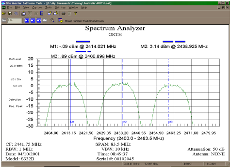

Mengenal Jaringan MAN
Metropolitan Area Network (MAN) adalah suatu jaringan dalam suatu kota dengan transfer data berkecepatan tinggi yang menghubungkan berbagai lokasi seperti kampus, perkantoran, pemerintahan, dan sebagainya. Berikut adalah karakteristik MAN yaitu:
- Meliputi area seluas antara 5 dan 50 kisaran km. Banyak MAN mencakup area perkotaan.
Sebuah MAN (seperti WAN) umumnya tidak dimiliki oleh satu organisasi. MAN, komunikasi linknya dan peralatan, umumnya dimiliki oleh salah satu konsorsium pengguna atau oleh penyedia layanan jaringan yang menjual pelayanan kepada pengguna.
MAN sering bertindak sebagai jaringan kecepatan tinggi untuk memungkinkan berbagi sumber daya daerah. Hal ini juga sering digunakan untuk menyediakan koneksi bersama untuk jaringan lain dengan menggunakan link ke WAN.
- MAN berukuran lebih besar dan biasanya memakai teknologi yang sama dengan LAN.
Hanya memiliki sebuah atau dua buah kabel dan tidak memiliki elemen switching, yang berfungsi untuk mengatur paket melalui beberapa output kabel . Adanya elemen switching membuat rancangan menjadi lebih sederhana.
MAN sendiri diartikan Sebagai Suatu jaringan yang meng-cover sebuah kota (Computer networks, ANDREW S.T, halaman 117). Pada awalnya rangkaian MAN dihubungkan dengan menggunkan Kabel LAN untuk menghubungkan kantor yang satu ke kantor cabang yang lainnya yang jaraknya beberapa KM, dengan hadirnya WIMAX maka pengguna layanan internet semakin tertarik pada Wireless yang berskala MAN.
Peralatan pre-Wimax (IEEE 802.16) merupakan suatu perangkat yang didesain khusus untuk wireless bersekala MAN, contoh peralatan ini adalah Redline AN-50 AN-30, Alvarion Link Blaster.
Wireless MAN dapat bermain pada beberapa frekuensi yaitu frekuensi 900 MHz, 1.5 GHz, 2 GHz, 2.5 GHz, 3.3 GHz, 5.8 GHz. Dan Saat ini diindonesia yang ijinkan pemerintah untuk dipakai oleh masyarakat umum adalah frekuensi 2.4GHz yang kemudian dibagi lagi menjadi beberapa channel.
Berikut penulis menyajikan gambar pembagian frekuensi yang digunakan diudara:
(Gambar diambil dari e book”CCNA: Cisco Certified Network Associate Study Guide six Edition” halaman 706).
Gambar pembagian frekuensi
Pada kesempatan ini penulis asumsikan kita menggunakan IEEE 802.11b untuk mendesain jaringan wireless berskala MAN (Metropolitan Area Network) dengan menggunakan frekuensi 2.4GHz.
Daftar Frekuensi kanal-kanal yang dapat digunakan pada frekuensi 2.4GHz
| Kanal | Frekuensi | Kanal | Frekuensi |
| 1 | 2.412 GHz | 8 | 2.447 GHz |
| 2 | 2.417 GHz | 9 | 2.452 GHz |
| 3 | 2.422 GHz | 10 | 2.457 GHz |
| 4 | 2.427 GHz | 11 | 2.462 GHz |
| 5 | 2.432 GHz | 12 | 2.467 GHz |
| 6 | 2.437 GHz | 13 | 2.472 GHz |
| 7 | 2.442 GHz | 14 | 2.477 GHz |
Tiap negara mempunyai aturan yang berbeda-beda dalam penggunaan channel diatas, Misalnya saja untuk beberapa daerah di Amerika, hanya dapat menggunkan kanal 1 hingga kanal 11, di Eropa menggunakan kanal 1 hingga 13, sedangkan Jepang sendiri yang mempunyai tingkat teknologi tinggi hanya bermain pada kanal 14.
Untuk WiFi yang berlabelkan 802.11b yang menggunakan Modulasi Direct Sequence Spread Spectrum (DSSS), akan terlihat spectrum yang yang lebarnya 22MHz untuk setiap stasiun yang memancar.
Dapat dilihat diatas satu channel akan melebar kebawah 11MHz dan akan melebar 11MHz keatas hingga total spectrum yang terambil adalah 22MHz, hal ini tentunya akan mengambil dua kanal diatas dan 2 kanal dibawahnya sehingga kanal yang terpakai sebanyak 5 kanal. Sehingga jika anda ingin membangun jaringan ini ada baiknya anda membebaskan/tidak menggunakan 2 channel dibawah dan 2 channel diatas dari kanal yang anda gunakan agar terbebas dari inteferensi.

Non overlapping Channel merupakan suatu set channel yang diperkirakan mempuyai set/jarak pemisah frekuensi dan dapat digunakan bersama dalam waktu yang sama tanpa adanya interferensi, non-overlapping channel bekerja pada link RF.
Penggunaan 4 Channel ini memang dapat menjangkau wilayah yang lebih luas tetapi akan terjadi sedikit interferensi pada tiap - tiap channelnya.
JARAK TRANSMISI WLAN
Pada Gambar diatas menjelaskan kemampuan Transmit / daya pancar dan Receive/Penerima suatu set peralatan Wireless dengan keterbatasan Effective Isotropic Radiated Power (EIRP) Hanya 30-36 sehingga kita hanya mempunyai jangkauan yang terbatas.
Secara hukum pancaran sinyal antena yang dijinkan adalah 36dBmW, sehingga ketika anda menggunakan antena 24dBi anda hanya menggunkan daya sekitar 15dBm / sekitar 30 mW saja.
Pada umumnya peralatan WLAN yang ada dipasaran mempunyai daya pancar antara 15-20 dBm (30-100mW), dengan daya yang terbatas ini mengakibatkan jarak jangkauanpun menjadi terbatas. Gambar dibawah merupakan suatu bentuk daerah coverage dari WLAN
Gambar diambil dari “Buku Penggangan Internet wireless dan Hostpot karangan Onno Purbo halaman 239”
Titik-titik diatas menggambarkan jangkauan transmisi radio untuk tipe antena tertentu. Desain ini nantinya akan digunakan sebagai acuan untuk pemodelan sell di jaringan Wireless Metropolitan Area Network. Secara Teori Access Point dengan antena Omnidirectoral akan meng-cover beberapa wilayah dengan cakupan wilayah sekitar 4 sampai 5 km.
Pada Kenyataannya tidak semua daerah pada titik pada segi-enam diatas dapat menerima jangkauan wireless, ini dikarenakan bentuk radiasi dari antena yang lonjong, sehingga pada segi-enam akan ada daerah kosong atau sering disebut dengan Blank spot . Selain itu faktor lain yang dimungkinkan untuk menghambat pancaran sinyal ini adalah bentuk tekstur dari wilayah jangkauan. Jika wilayah berbukit atau banyaknya gedung yang tinggi maka pancaran akan terhambat.
Warna Orange pada gambar diatas adalah daerah cakupan dari wireless
Desain Metropolitan Area Network (MAN) berdasarkan pada Tiga Non-Overlapping channel
Omnidirectionsl Access Point
Pada Bagian kita menggunakan model jangkauan hexagonal dengan melibatkan 3 channel yang berbeda yaitu channel 1 (2412MHz), channel 6 (2437MHz) dan channel 11 (2462MHz).
Karena hanya menggunakan 3 channel maka logika sederhana agar tidak terjadi interferensi yaitu dengan disusunnya channel-channel yang berbeda pada tiap-tiap sell yang berdekatan, logika ini dituangkan pada struktur gambar diatas dimana tiap channel yang berbeda diberi warna dan nomor channel yang berbeda.
Dengan susunan channel diatas diharapkan dapat menjangkau wilayah/kota seluas 35x35 km tanpa adanya interferensi. Kita asumsikan jika satu sell saja dapat menampung 10-30 nodestation/warnet maka dapat anda bayangkan minimal wireless ini dapat mencakup minimal 70 nodestation/wanet.
Teknik Selanjutnya kita menggunkan Sectoral Access point, dengan tiga jenis channel yang berbeda yang tentunya dengan menggunakan acces point yang berbeda pula. Pada kasus ini 3 jenis Access point tersebut diletakkan pada satu Tower yang sama dengan perkiraan cakupan 120 derajat pada setiap access point. Diperkirakan jika tidak ada halangan yang berarti access pint ini dapat menjangkau 6 hinggga 8 Km pada tiap acces point.
Dapat dilihat diatas, suatu tower diletakkan tepat disudut salah satu sell, hal ini ditujukan untuk menghemat penggunaan tower. Kepadatan jaringan tergantung pada traficc lalu lintas pada jaringan, ini sebabnya total WiFi setiap sell menjadi terbatas yaitu berkisaran pada 10-30 nodestation. Perlu diketahui sebetulnya total komputer yang terhubung kejaringan jumlahnya lebih besar daripada node WiFi di jaringan.
Tampak diatas susuan wireless menggunakan prinsip sectoral, Sama halnya dengan susunan pada omnidirectional, susunaan ini juga menggunakan 3 channel yang berbeda pula, dapat dilihat dengan perbedaan warna pada susunan cell, jarak warna(dalam hal ini frekuensi) berjauhan, sehingga interferensi tidak akan terjadi.
Jangkauan wilayah pada susunan ini hampir sama dengan omnidirectional yaitu 35x35 km persegi, tetapi tidak sama hal nya dengan banyaknya node yang dapat dijangkau pada susunan ini, susunan ini dapat meng-cover 9 sell dengan 9x30 node atau 270 node.
Menggunakan 4 channel yang berbeda merupakan ciri khas dari susunan cell ini, susunan sell tidak menggunakan bentuk jangkauan segi-enam seperti bahasan sebelumnya, tetapi sudah menggunkan persegi-empat. Karena Bentuknya persegi empat maka tiap antena tidak meng-cover 120 derajat lagi, tetapi 90 derajat saja.
Sama halnya dengan susuanan sektoral, tower diletakkan pada sudut dalam sell, tetapi tentunya pada susunan ini tidak digunakan segi-enam sebagai wilayah cakupannya karena sudah menggunakan 4 channel pada satu tower. Channel yang digunakan pada susunan ini adalah channel 2412 MHz, channel 2432 MHz, channel 2452 MHz, dan channel 2472MHz.
Karena menggunkan 4 channel yang berbeda tetapi masih dalam batasan 2412 MHz hingga 2477MHz maka pada susunan ini akan terjadi sedikit interferensi. Jarak jangkauan sama saja halnya dengan jarak jangkauan pada susunan sebelumnya yaitu 6 hingga 8 km,tetapi dengan konfigurasi yang berbeda pula.
Jangkauan wilayah yang dapat dijangkau akan semakin jauh lebih besar lagi daripada sebelumnya, hanya dengan 3 buah tower (yang masing - masing tower dipasang 4 channel yang berbeda) mampu meng-cover 3x4 atau dua belas sell. Melihat hal ini sudah tentu jumlah nodenya juga akan betambah , jumlah komputer yang dapat dilayani juga akan bertambah tetapi tidak menambah jumlah tower, tentu saja dengan penambahan channel frekuensi menjadi 4 jenis channel yang berbeda.
Dengan kasus menggunakan banyak tower kita membutuhkan sambungan antara tiap tower, yaitu sambungan yang sering dikenal dengan POINT to POINT, salah satu syarat sambungan point to point yaitu, sambungan wajib bekerja pada frekuensi yang sama dan bekerja dalam suatu wilayah. Sambungan point to point biasanya menggunakan antena Omni dan sectoral.
Keuntungan MAN:
- Server kantor pusat dapat berfungsi sebagai pusat data dari kantor cabang.
- Transaksi yang Real-Time (data di server pusat diupdate saat itu juga, contoh ATM Bank untuk wilayah nasional)
- Komunikasi antar kantor bisa menggunakan e-mail, chatting
- Video Conference (ViCon).
- Biaya operasional mahal.
- Instalasi infrastrukturnya tidak mudah.
- Rumit jika terjadi trouble jaringan (network trouble shoot).